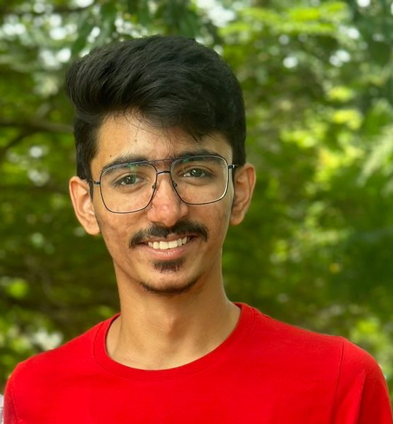

Chinmay Mahapatra

Summary
Currently a final year student at VIT Chennai. I am a lifelong learner and
am constantly seeking
to expand my knowledge and skills in order to stay up-to-date with the
latest trends and best practices in my field.
Eductaion
-
B.Tech in Computer Science Engineering with specialization in Artificial
Intelligence and Machine Learning (2021 - 2025)
- AISSCE (Class XII - 92.6%), AISSE (Class X - 87.4%) (2008 - 2021)
Work Experience
-
Software Developer Intern - Steel Authority of India Limited (SAIL)
Sep 2023 - Dec 2023
-
Build vocational training portal using various programming
languages such HTML, CSS, PHP.
-
Increase productivity by using software to organize, track bug
patches.
-
Collaborate with other developers to update the website and create
new features.
-
Web Developer - Bharat Intern
Aug 2023 - Sep 2023
-
Built cloned websites to understand the application of tech stacks
such as HTML and CSS.
-
Research Intern - Vellore Institute of Technology, Chennai
Aug 2023 - Sep 2023
-
Built deep learning model which detects banana leaf diseases and
categorise them into different classes.
Skills
- HTML
- CSS
- C/C++
- NodeJS
- JavaScript
- Python
- ExpressJS
- Machine Learning
Awards and Certifications
- Machine Learning - Udemy (April 2023)
- Fit in Deutsch A1Fit in Deutsch A1 - Goethe-Institut e.V.
Other